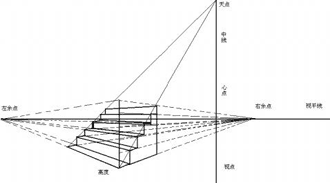
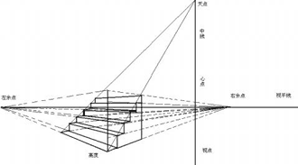

3D坐标
个人理解：x轴，y轴同2D平面，z轴为正面面对平面方向
perspective属性
perspective的中文意思是：透视，视角
perspective属性的存在与否决定了你所看到的是2次元的还是3次元的，也就是是2D transform还是3D transform. 这不难理解，没有透视，不成3D.
 

不过，CSS3 3D transform中的透视的透视点与上面两张示例图是不同的：CSS3 3D transform的透视点是在浏览器的前方！
个人理解：perspective的值可看做眼睛距离浏览器的距离，以眼睛为透视点
perspective属性的两种书写
perspective属性有两种书写形式，一种用在舞台元素上（动画元素们的共同父辈元素）；第二种就是用在当前动画元素上，与transform的其他属性写在一起。如下代码示例：
.stage {
perspective: 600px;
}
#stage .box {
transform: perspective(600px) rotateY(45deg);
}
舞台整个作为透视元素时，我们看到的每个子元素的形体都是不一样的
perspective-origin
transform-style: preserve-3d
transform-style属性也是3D效果中经常使用的，其两个参数，flat|preserve-3d. 前者flat为默认值，表示平面的；后者preserve-3d表示3D透视。
preserve-3d符合我们真实世界的思维认识。因此，基本上，我们想要根据现实经验实现一些3D效果的时候，transform-style: preserve-3d是少不了的。一般而言，该声明应用在3D变换的兄弟元素们的父元素上，也就是舞台元素。
backface-visibility
在CSS3的3D世界中，默认情况下，我们是可以看到背后的元素。为了切合实际，我们常常会这样设置，使后面元素不可见：
backface-visibility:hidden;